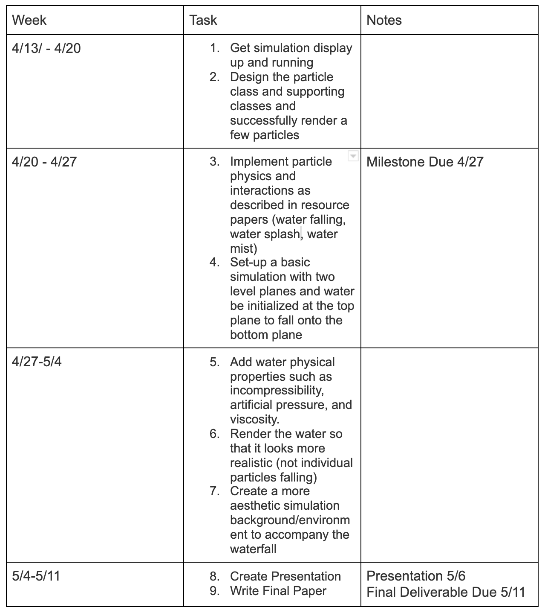

So far we modified the project 4 structure such that individual particles could be displayed and interact without being in a mesh. We also created a finite plane that the water particles could fall off of. We've identified the physics equations we want to integrate in our simulation loop and have started implementing them (Navier-Stokes, viscosity, incompressibility, etc).
|
|
We run our simulation with 10000 particles whose initial positions are located above the first plane. We update the positions of the particles with Verlet Integrations with corrections for self-collisions. After a fixed time, the position of each particle is reset to its initial position to create the effect that particles are constantly flowing from the source of the waterfall.
We are slightly behind, but almost on track with our schedule. We acheived steps 1,2,4 from the schedule (get simulation display up and running, design the particle class and supporting classes and successfully render a few particles, set-up a basic waterfall simulation with two level planes). We are currently in the process of implementing physics equations for making our particle position updates more realistic: Navier-Stokes for water falling, splashing spray and the spray cloud.
The schedule was updated with the specific properties we wanted the water to have and with the different stages of the water fall we wanted to implement. We mainly added more things to focus on for this final week.
|

|